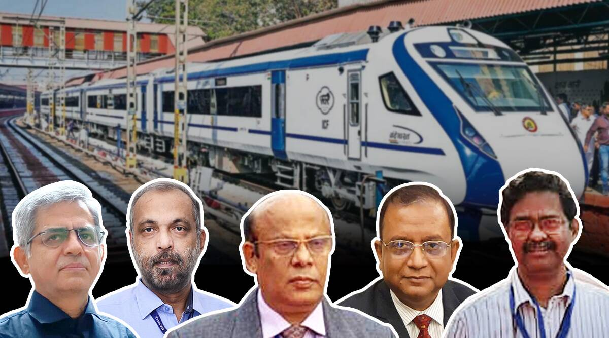

'Why couldn't we make our own high-speed trains?': Meet the men who brought Train 18 to life
 The team of 5 engineers decided they would produce the first Vande Bharat train in 18 months- Project 18. The Indian Express talks to the team of original engineers who were on Project 18. They are all part of Chennai Integral Coach Factory, setup with Swiss collaboration in 1955. By 2019 the first train was operational at speeds of 180 km per hour, semi-high speed and setting the transition to high speed trains developed entirely within India. Sudanshu Mani, General Manager of ICF, headed this effort and set the target of 18 months. He says China used to import all its trains and one day just decided to make its own- he asked himself the same question, why don't we make our own? Mani was in Berlin for 3 years on an earlier collaboration for train technology in the 1980's. By the 1990's this technology was 20 years old he says. That's how long it took to get anything done in those days, by the time it got started the technology would be obsolete. By 2018 just 2 years before retirement Sudanshu set up the Project 18 team convinced that this was the only way to get it done- to beat the odds. Devi Prasad Dash heads electrical engineering. Srinivas heads mechanical engineering. Pradhan is Chief Design Engineer. They did everything from scratch. There are 5000 others who worked on the project.
Ever wonder why the train is all white and with blue stripe? Subranshu who was chief mechanical engineer at the time says they tried other colors. Manish Pradhan says they decided on white after one thought that Indian trains are never white because we had that belief that anything white would get dirty faster. That is when we decided to make it all white and it will not look dirty, he says. Sudanshu Mani says he would close his eyes and he would see always the old Indian trains that one would see from the 1960's from Ahmedabad to Rameswaram, and onto Colombo after the ferry. At that time Colombo had Canadian coaches and locomotives under a Canadian aid plan from Talaimannar to Colombo which were like American trains, looked miles into the future.The same thing must have happened to Chinese engineers because Chinese premier Chou-en-lai visited the ICF in Chennai in the 1950's and wrote that Chinese engineers could learn about the new Swiss technologies from ICF Chennai.
Turkey fines broadcasters for coverage critical of earthquake response

Turkey’s media regulator fined three broadcasters for their coverage of the earthquake in the country’s south that killed more than 42,000 people, an opposition-nominated member of its board said in criticising the decision. Halk TV, Tele 1 and FOX were all handed fines, calculated based on their revenues for the month beforehand, for reporting shortcomings in the government’s earthquake response. The three channels are known for editorial lines critical of the Turkish president, Recep Tayyip Erdoğan, and Halk TV is strongly aligned with the CHP party, Turkey’s main opposition. In Short 1. Turkey, as per estimates, has likely slipped by five to six meters 2. The quake was centered in Turkey's southeastern province of Kahramanmaras 3. The quake occurred in a seismically active area known as the East Anatolian fault zone
As the rescue work continues non-stop for over 72 hours after Turkey was hit by one of the deadliest earthquakes in the recent past, seismologists claim that the country could have moved by five to six meters compared to Syria. The movement could have been caused by the grinding in the tectonic plates on which the country sits. The quake, which was centered in Turkey’s southeastern province of Kahramanmaras, sent residents of Damascus and Beirut rushing into the streets and was felt as far away as Cairo.
As mankind races to resume to normal, we should not be too optimistic that life returns to what it was before. This is because like never before, Coronavirus has exposed the fragility in our society and the glaring flaws in shareholder capitalism.
"Global Governance Has Failed": PM Modi At G20 Foreign Ministers' Meet

New Delhi: Prime Minister Narendra Modi today said, "global governance has failed" and multilateralism is in crisis as he opened a Foreign Ministers' meeting of the G20 where Russia's war in Ukraine has taken centre-stage. Multilateral institutions had failed to meet the world's most pressing challenges, PM Modi said in a recorded message before the first session of the Foreign Ministers' meet. " We must all acknowledge that multilateralism is in crisis today...The experience of the last few years - financial crisis, climate change, pandemic, terrorism and wars - clearly shows that global governance has failed," he said.
"After years of progress, we are at risk today of moving back on the sustainable development goals. Many developing countries are struggling with unsustainable debts while trying to ensure food and energy security. They are also most affected by global warming caused by richer countries. This is why India's G20 presidency has tried to give a voice to the global south," the Prime Minister said. PM Modi urged world leaders to find "common ground" on divisive issues. "We are meeting at a time of deep global divisions. We have a responsibility to those not in this room," said the PM. "We should not allow issues that we cannot resolve together to come in the way of those we can."
PM Modi said no group could claim global leadership without listening to those most affected by its decisions. "We must focus on what unites us, not on what divides us," he asserted. Some 40 delegations are participating in the G20 Foreign Ministers' meeting at the Rashtrapati Bhavan Cultural Center. Besides the G20 member countries, the foreign ministers of nine guest countries are also participating in the meet - Bangladesh, Egypt, Mauritius, Netherlands, Nigeria, Oman, Singapore, Spain and the United Arab Emirates. The ministers are expected to discuss key global challenges as they meet amid an widening rift between the US-led West and the Russia-China combine on the Ukraine war. India is set to make all-out efforts for a joint statement following the meeting.